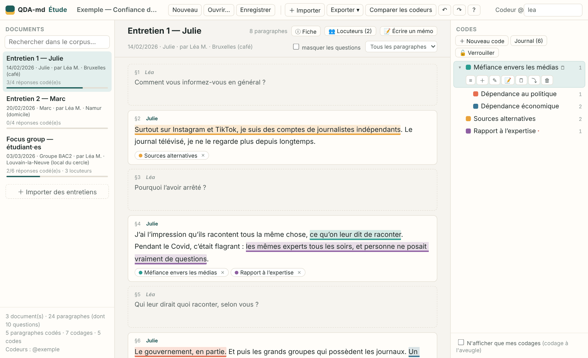
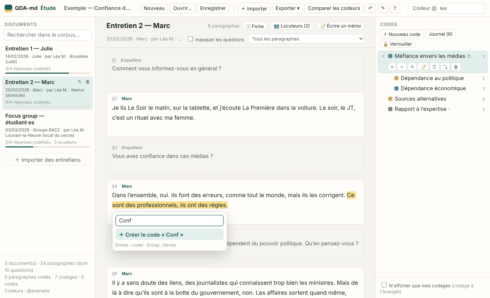
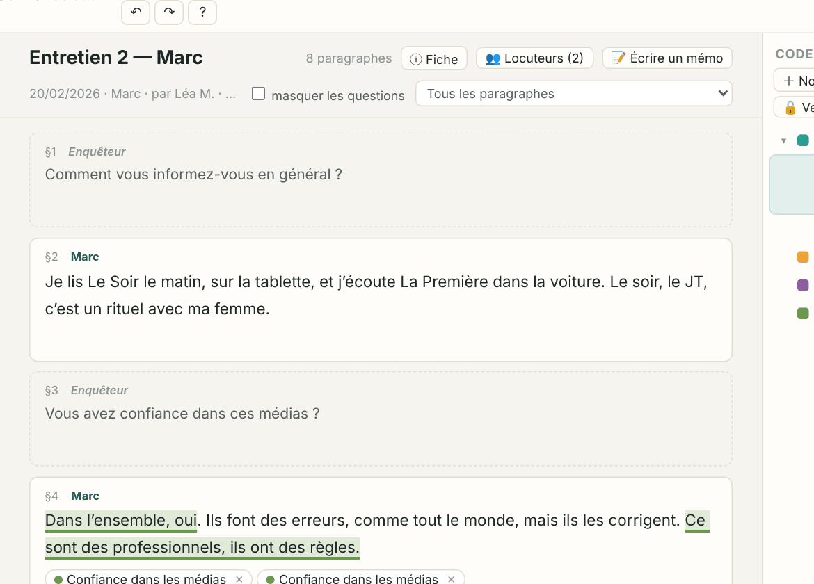

Prise en main rapide¶
Ce parcours de dix minutes utilise le projet d’exemple : deux entretiens individuels et un focus group sur la confiance dans l’information.
1. Ouvrir le projet d’exemple¶
Sur la page d’accueil, cliquez sur Projet d’exemple. L’espace de travail comprend trois colonnes :
- à gauche, les documents (un entretien = un document), avec leur fiche et une barre d’avancement ;
- au centre, le texte du document choisi, découpé en paragraphes ; les questions de l’intervieweuse apparaissent en pointillés ;
- à droite, l’arbre de codes.

2. Coder un passage¶
Ouvrez l’Entretien 2 — Marc. Sélectionnez à la souris le passage « Ce sont des professionnels, ils ont des règles. » : une petite fenêtre s’ouvre. Tapez Confiance dans les médias puis Entrée : le code est créé et appliqué.

Sélectionnez ensuite « Dans l’ensemble, oui » et appuyez directement sur Entrée : le dernier code utilisé est proposé en premier.
Le passage codé est surligné et une étiquette apparaît sous le paragraphe. Un même passage peut recevoir plusieurs codes ; les barres de couleur s’empilent.

3. Organiser les codes¶
Dans la colonne de droite, cliquez sur un code : ses actions apparaissent (≡ extraits, ＋ sous-code, ✎ renommer, 📝 définition, 🗒 mémo, ⤵ fusionner, 🗑 supprimer). Glissez-déposez un code sur un autre pour l’y ranger. Écrivez la définition du code que vous venez de créer : le petit point orange disparaît.
4. Relire ses extraits¶
Double-cliquez sur « Méfiance envers les médias » : tous les passages qui portent ce code s’affichent, dans leur contexte. Cochez « inclure les sous-codes », puis « Exporter en .md » pour récupérer ces extraits dans un fichier.
5. Explorer le focus group¶
Ouvrez Focus group — étudiant·es : chaque prise de parole porte le pseudo de son auteur·e. Choisissez un participant dans le menu « Tous les locuteurs », ou cochez « masquer les questions ». Le bouton 👥 Locuteurs montre les caractéristiques des participant·es et un tableau « Qui mobilise quels codes ? ».
6. Enregistrer¶
Cliquez sur Enregistrer et choisissez un emplacement. Vous savez l’essentiel : passez à la préparation de vos propres entretiens.